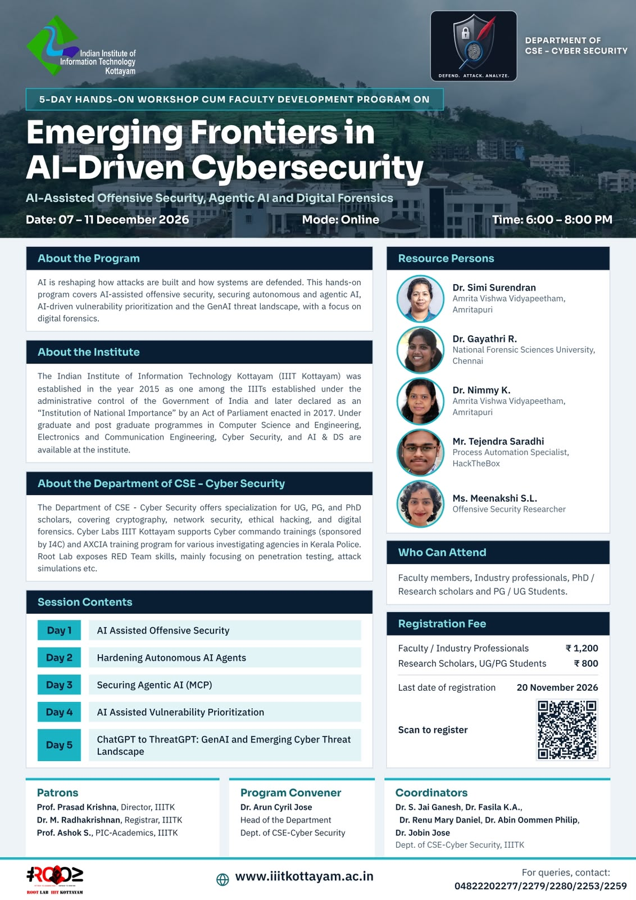
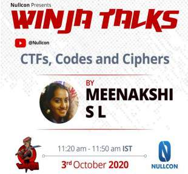

Sharing knowledge
Talks.
Some of my best learning has come from people willing to share what they know. I hope to pass that on through talks, trainings, and workshops that make security approachable and encourage people to explore, experiment, and ask questions.
Have a question, a topic to discuss, or a session in mind? Feel free to reach out on LinkedIn — I’m always happy to connect and exchange ideas.
Upcoming

Emerging Frontiers in AI-Driven Cybersecurity
Resource person for a five-day online, hands-on program on AI-assisted offensive security, agentic AI, and digital forensics.

Past sessions

CTFs, Codes and Ciphers
An introduction to the world of cryptography and capture-the-flag competitions.